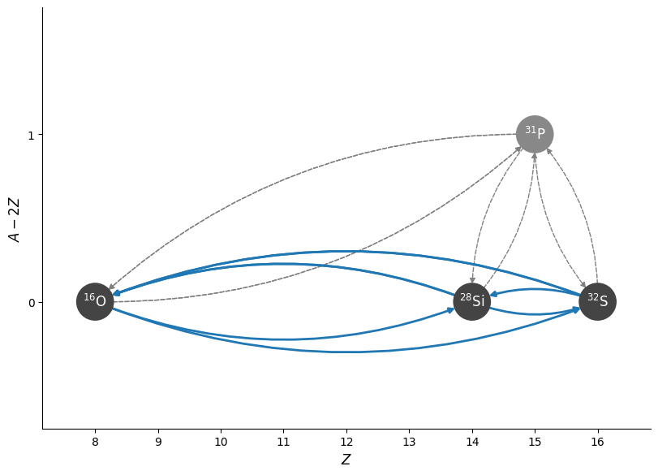
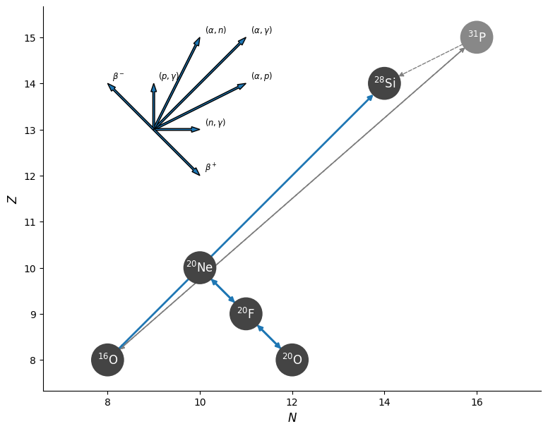
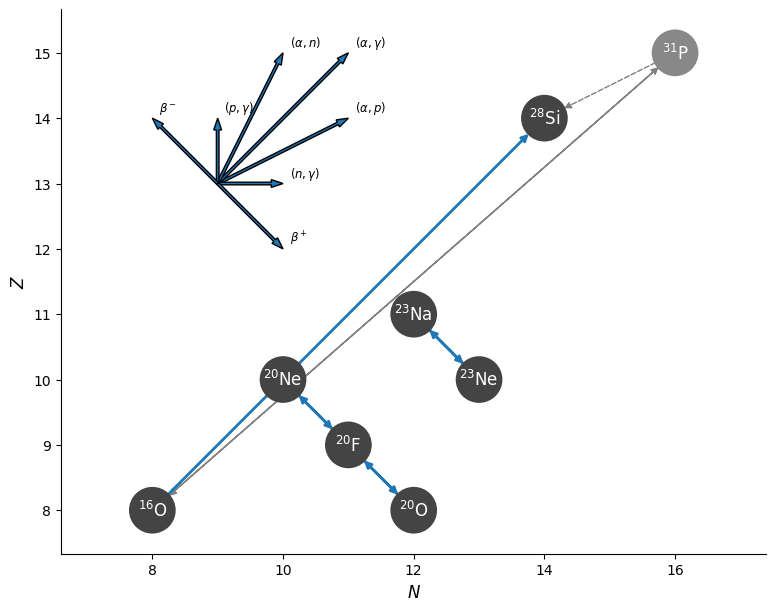
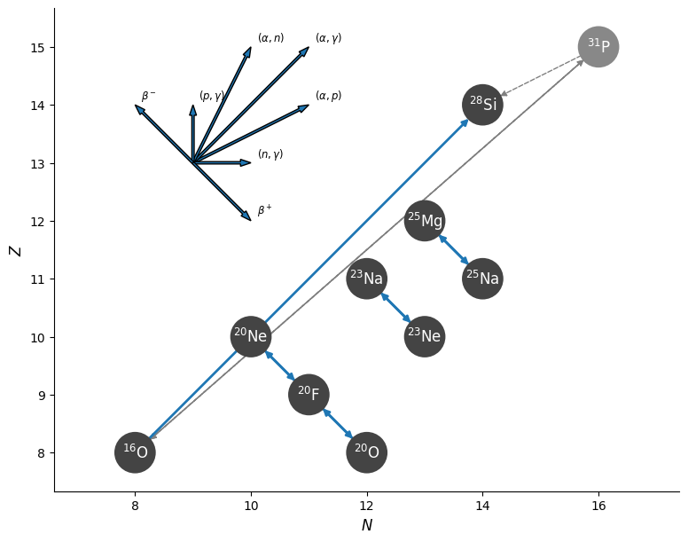
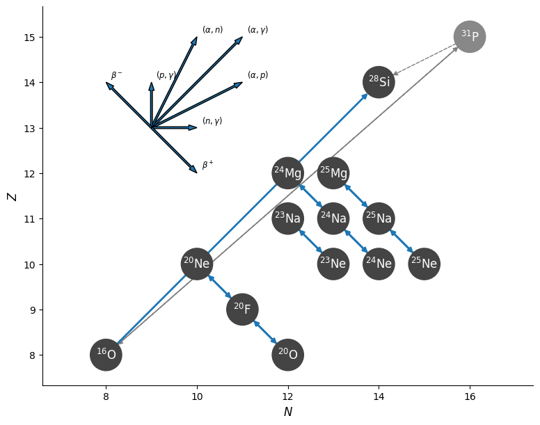

Networks used in labs#
In the labs, we build minimal networks with only a subset of the rates that can connect the nuclei.
O+O rate#
These nets all use an approximation to the O+O burning rate
import pynucastro as pyna
from pynucastro.rates.aprox_family_rates import make_CO_approx_rates
rl = pyna.ReacLibLibrary()
o_rates = make_CO_approx_rates(rl.get_rates(), "O")
o_rates
[O16 + O16 ⟶ S32 + 𝛾,
S32 ⟶ O16 + O16,
O16 + O16 ⟶ Si28 + He4,
Si28 + He4 ⟶ O16 + O16,
Si28 + He4 ⟶ S32 + 𝛾,
S32 ⟶ Si28 + He4]
net = pyna.RateCollection(rates=o_rates)
fig = net.plot(rotated=True, curved_edges=True)

We see that we can go from \({}^{16}\mathrm{O}\) to \({}^{28}\mathrm{Si}\) either directly, or through \({}^{31}\mathrm{P}\). We’ll use an approximate rate that represents both of these paths
r1616 = net.get_rate_by_name("o16(o16,he4)si28")
r1616
O16 + O16 ⟶ Si28 + He4
type(r1616)
pynucastro.rates.approximate_rates.ApproximateRate
Lab 1#
We’ll use the tabular rates from Suzuki
sl = pyna.SuzukiLibrary()
rate_names = ["ne20(,)f20",
"f20(,)ne20",
"f20(,)o20",
"o20(,)f20"]
rates = sl.get_rate_by_name(rate_names)
net = pyna.RateCollection(rates=[r1616]+rates)
fig = net.plot(legend_coord=(13, 9))

Lab 2#
first Urca pair#
rate_names += ["na23(,)ne23",
"ne23(,)na23"]
rates = sl.get_rate_by_name(rate_names)
net = pyna.RateCollection(rates=[r1616]+rates)
fig = net.plot(legend_coord=(13, 9))

second Urca pair#
rate_names += ["mg25(,)na25",
"na25(,)mg25"]
rates = sl.get_rate_by_name(rate_names)
net = pyna.RateCollection(rates=[r1616]+rates)
fig = net.plot(legend_coord=(13, 9))

Lab 3#
We add a second \(A=25\) urca piair and some \(A = 24\) rates
rate_names += ["mg24(,)na24",
"na24(,)mg24",
"na24(,)ne24",
"ne24(,)na24",
"na25(,)ne25",
"ne25(,)na25"]
rates = sl.get_rate_by_name(rate_names)
net = pyna.RateCollection(rates=[r1616]+rates)
fig = net.plot(legend_coord=(13, 9))
